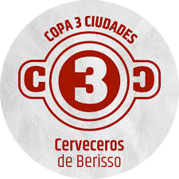
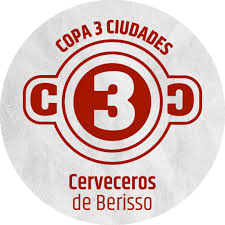

NOSOTROS
Es una empresa de amigos. Arrancamos en el año 2008, Pedro, Nicolás y Alejandro, en un garage y con un equipo prestado. Miramos para atrás todo el recorrido transitado y celebramos quienes somos.
"Hacemos lo que nos gusta."
Desarrollamos una amplia variedad de estilos de cerveza, donde el balance entre los lúpulos y las maltas, se define en estilos de buena tomabilidad y con un equilibrio armonioso de sabores y aromas.
PROPÓSITO
Trabajamos para superarnos día a día en búsqueda de una mejor cerveza, innovando sobre los procesos productivos con el fin de mejorar la calidad con énfasis en el cuidado y respeto del medio ambiente, a través de la reutilización de desechos, el cuidado del agua y la eficiencia energética.
RECONOCIMIENTOS
-
IRISH STOUT
Medalla de Bronce South Beer Cup 2022
Medalla de Oro Copa Argentina de Cervezas 2022
Medalla de Oro Copa Argentina de Cervezas 2020
Medalla de Bronce Copa Tres Ciudades 2019

 

-
IRISH RED ALE
Medalla de Bronce South Beer Cup 2022
Medalla de Plata Copa Argentina de Cervezas 2022

-
GOLDEN ALE
Medalla de Plata Copa Argentina de Cervezas 2016